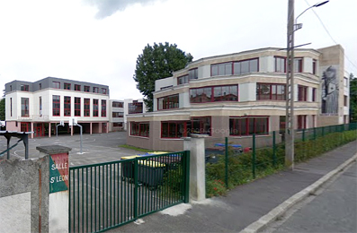

J'ai passé mes années de collège à l'établissement Saint-Spire, situé à Corbeil-Essonnes, en Essonne. J'ai ensuite été au lycée Saint-Léon (photo), dans la même ville. Après une seconde générale, je suis allé en première Economique et Sociale, avant de prendre la spécialité Sciences-politiques en terminale.
Je donne des cours de soutien de niveau collège les samedi après-midi, j'ai obtenu le diplôme du PSC-1 et la formation générale du BAFA.
J'ai pratiqué le Tae-Kwon-Do pendant 8 ans, et j'ai encadré, donné des cours et arbitré une compétition.
